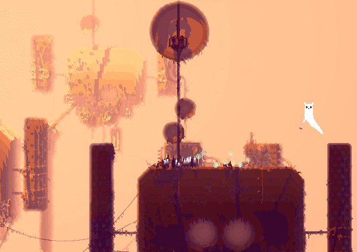
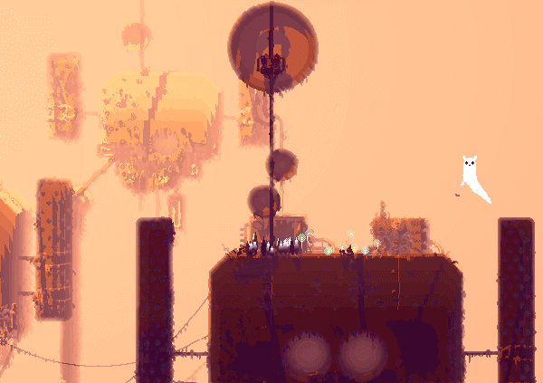
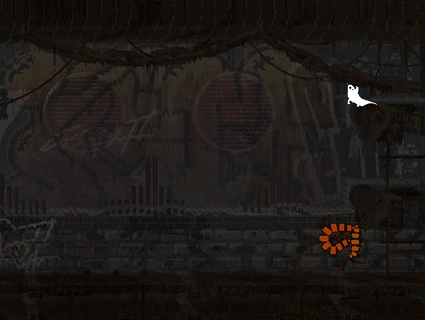
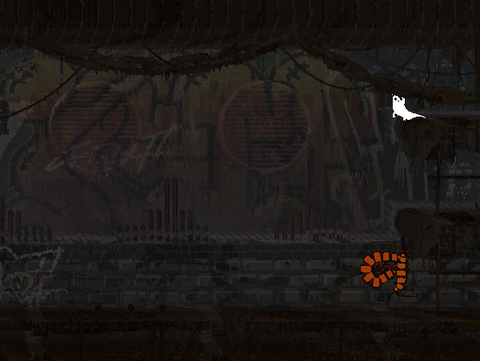

Описание игры
Вы слизнекот. Вокруг вас мир, полный опасностей, и вам предстоит справляться с ними в одиночку. Вы потеряли семью во время разрушительного наводнения и теперь вынуждены охотиться, чтобы не умереть с голоду, и искать убежища в перерывах между бушующими ливнями, которые грозят утопить все живое. Пробирайтесь по руинам древней цивилизации, не попадайтесь в пасть злобным хищникам и открывайте новые земли, полные странных существ и древних тайн. Доберитесь до своей семьи, пока смерть не пришла за вами!
Этот платформер на выживание, вдохновленный простотой и эстетикой 16-битной классики, потребует от вас быстроты и скрытности, будь то охота или спасение от голодных хищников. Прожорливые враги хитры, злы и всегда наготове вонзить зубы в вас или даже своего сородича. Вам, маленькому мягкому слизнекотику, нечего и надеяться на силу — вы можете полагаться лишь на скрытность и смекалку: изучите экосистему и используйте ее особенности себе на пользу. Может быть, тогда вам и удастся выжить в… Rain World!
- Крадитесь, карабкайтесь и пробирайтесь через динамичную, постоянно меняющуюся экосистему, где каждый является хищником или жертвой.
- Исследуйте огромный мир из более чем 1600 комнат, охватывающих 12 различных регионов, наполненных древними тайнами и неизведанными опасностями.
- Проворные движения и процедурно сгенерированная анимация придают слизнекотику естественную плавность движений и уникальное ощущение веса.
- Интенсивные столкновения с первобытными хищниками бросят вызов вашим рефлексам.
- Ограниченные ресурсы и постоянная надвигающаяся угроза дождя проверят ваши нервы.
Существа Rain World анимированы с помощью комбинации кода и традиционной анимации. Это делает их мягкими и гибкими, а также восприимчивыми к окружающей среде.

 

 
